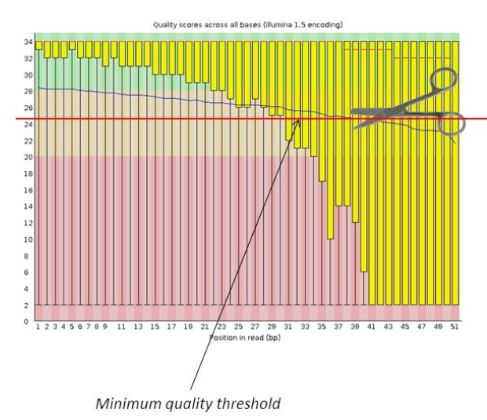
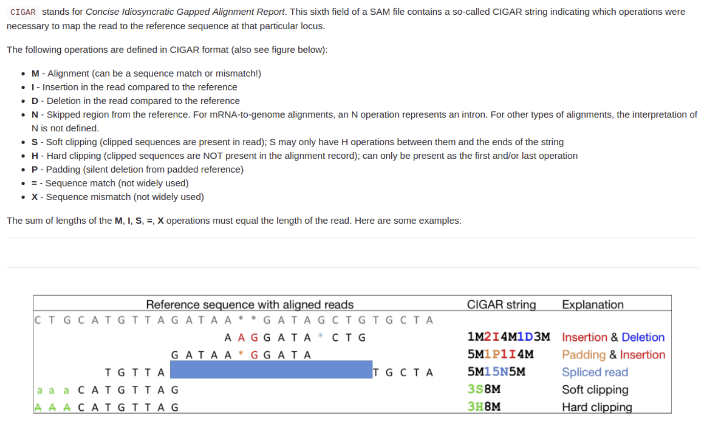

Les basiques autour des NGS
Module 5 - DUBii 2018
Olivier Rué & Olivier Kirsh
Objectifs de ce cours
- Connaître les ressources bioinformatiques en ligne pour traiter des données NGS
- Savoir récupérer en local ce type de ressources
- Découvrir les principaux formats de fichiers
Jeu de données
Bacterial regulons in Escherichia coli with ChIP-seq and RNA-seq
Myers KS, Park DM, Beauchene NA, Kiley PJ. Defining bacterial regulons using ChIP-seq. Methods. 2015 Sep 15;86:80-8. doi: 10.1016/j.ymeth.2015.05.022. Epub 2015 May 29. Review.
- PubMed PMID: 26032817
- PubMed Central PMCID: PMC4577457
Environnement de travail
Pour ce cours, vous travaillerez sur la machine locale qui vous est mise à disposition
Vous aurez besoin du terminal et d'un navigateur web

Introduction
Les essentiels d'un pipeline d'analyse de données NGS
- Ressources (données issues du séquençage, génome de référence, annotations, base de données...)
- centralisées
- pas toujours pour les organismes non modèles
- Une liste exhaustive est disponible entre autres ici
- Outils
- certains incontournables
- dépendants de la thématique et/ou de l'analyse souhaitée
- Beaucoup sont recensés ici : labworm.com
- Puissance de calcul (mémoire/coeurs)
- clusters de calculs ouverts à la communauté
- [cf cours Unix 2]
Les principales ressources en ligne
Vous aurez forcément besoin d'utiliser des ressources produites et expertisées par d'autres. Il existe une multitude de sites recensant des ressources bioinformatiques. Les incontournables et les plus généralistes sont :
- Nucleotide Sequence Databases :
- Genome databases :
- Ensembl (vertebrate genomes)
Une classification plus exhaustive (séquences protéiques, domaines protéiques, structures protéiques 3D, voies métaboliques...) est disponible entre autres ici
NCBI
Le NCBI héberge et met en relation de nombreuses bases de données :
- Pubmed : publications et citations
- SRA : Sequence Read Archive (données de sortie de séquençage ou alignées vs référence)
- Genbank : Collection de séquences ADN annotées publiques
- RefSeq : Collection de séquences de génomes, de transcripts et de protéines, non redondantes
- dbSNP : Collection de variants, microsatellites... humains
- GEO : Collection de données liées à l'expression des gènes
- ...
Tout (ou presque) est interconnecté
ENA
L'ENA est l'équivalent européen du NCBI, hébergé à l'EMBL-EBI :
- Données de séquençage
- Assemblages de génomes annotés
- Annotations fonctionnelles de génomes
- ...
Les Accession Numbers
Les ressources sont décrites par un Accession Number. C'est leur numéro unique qui permet de les retrouver.
La nomenclature change en fonction des ressources (NCBI, ENA...) mais le préfixe reste fixe :
- 'DR' pour DDBJ Sequence Read Archive (DRA)
- 'EGA' pour European Genome-phenome Archive (EGA)
- 'ER' pour ENA Read
- 'SR' pour NCBI Sequence Read Archive (SRA)
Les données issues du séquençage
Les principales ressources publiques
La grande majorité des données brutes sont stockées soit au NCBI (Etats-Unis - NIH), soit à l'EBI (Angleterre - EMBL).
Depuis quelques temps, les reviewers exigent que vos données soient déposées et accessibles à la communauté.
SRA = 3 X ENA


Exercice n°1 : Retrouver où ont été déposées les données de séquençage de la publication
Une section est souvent dédiée à la mise à disposition des données en fin d'article
- Dans quelle base de données ont été déposées les données brutes ?
- Quel est leur numéro d'accession ?
- Allez sur le site en question et entrez le numéro d'accession dans la barre de recherche. Quelles informations avez-vous à disposition ?
- Cliquez sur le BioProject ID pour avoir accès aux données brutes, puis suivez le lien vers SRA
- Combien de fichiers de séquences brutes pouvez-vous récupérer ?
- Que pouvez-vous dire sur le séquençage du 1er run ?
- Pouvez-vous le télécharger via l'interface ?
Correction n°1
- Dans quelle base de données ont été déposées les données brutes ? GEO - NCBI
- Quel est leur numéro d'accession ? GSE41195
- Allez sur le site en question et entrez le numéro d'accession dans la barre de recherche. Quelles informations avez-vous à disposition ? auteurs, plateformes, publication, échantillons...
- Cliquez sur le BioProject ID pour avoir accès aux données brutes, puis suivez le lien vers SRA
- Combien de fichiers de séquences brutes pouvez-vous récupérer ? 13
- Que pouvez-vous dire sur le séquençage du 1er run ? RNAseq, Illumina GAIIx, reads pairés, 36 pb...
- Pouvez-vous le télécharger via l'interface ? Non
Exercice n°2 : Télécharger le run SRR5344684 avec la commande fastq-dump
Sélectionnez les options pour données pairées
fastq-dump -h # Afficher l'aide
fastq-dump -I --split-files SRR5344684
Affichez les dix premières lignes d'un fichier FASTQ. Comprenez-vous quelque chose ?
head SRR5344684_1.fastq
Le format FASTQ
C'est le format utilisé pour stocker des fragments séquencés (lectures ou reads)

- Fichier texte (.fastq)
- 4 lignes par séquence
- Hautement compressible (.fastq.gz)
gzip file.fastq # To compress
gzip -d file.fastq.gz # To uncompress
Encodage de la qualité de la base séquencée
Un score Phred est attribué par le séquenceur à chaque base séquencée, quelle que soit la technologie utilisée. Elle représente la confiance accordée à la base.
Elle est encodée en ASCII pour tenir sur un seul caractère.
Les scores de qualité varient selon les technologies de séquençage ! Attention !


Exercice n°3 : Extraire informations du FASTQ
Combien de séquences y a-t-il dans le fichier SRR5344684_1.fastq ?
wc -l SRR5344684_1.fastq # Puis diviser par 4
# 89629572 SRR5344684_1.fastq
cat SRR5344684_1.fastq | echo $((`wc -l`/4))
# 22407393
Contrôle qualité des fichiers FASTQ
FastQC est la référence pour analyser la qualité des lectures au format FASTQ.
MultiQC permet de synthétiser tous les rapports en un seul rapport.
Vous aurez accès à :
- Nombre de lectures
- Taille des lectures
- Qualité moyenne de la base séquencée à chaque position
- Présence d'adaptateurs de séquençage
- GC content
- ...
Vous le verrez en détail lors du cours Production de données #2
fastqc file.fastq.gz # Run fastqc on one compressed FASTQ file
Le génome de référence
La plupart des pipelines bioinformatiques reposent sur la présence d'une référence. Soit elle existe, soit il faut en construire une.
Attention, il existe des génomes complètement séquencés et très bien annotés (les organismes modèles), d'autres sont une succession de fragments représentant une sous-partie du génome.
La croissance du nombre de génomes est exponentielle (exemple du génome humain) :


Exercice n°2 : Récupérer le génome utilisé dans la publication : E. coli K-12 MG1655
- Recherchez cette référence sur le site du NCBI
- Combien y a-t-il de versions de cet assemblage ?
- Téléchargez la dernière version mise à jour
- Affichez les dix premières lignes du fichier
head sequence.fasta
>NZ_CP032667.1 Escherichia coli str. K-12 substr. MG1655 chromosome, complete genome
GTCCCGGCCCCGGCAGAACCGACCTATCGTTCTAACGTAAACGTCAAACACACGTTTGATAACTTCGTTG
AAGGTAAATCTAACCAACTGGCGCGCGCGGCGGCTCGCCAGGTGGCGGATAACCCTGGCGGTGCCTATAA
CCCGTTGTTCCTTTATGGCGGCACGGGTCTGGGTAAAACTCACCTGCTGCATGCGGTGGGTAACGGCATT
ATGGCGCGCAAGCCGAATGCCAAAGTGGTTTATATGCACTCCGAGCGCTTTGTTCAGGACATGGTTAAAG
CCCTGCAAAACAACGCGATCGAAGAGTTTAAACGCTACTACCGTTCCGTAGATGCACTGCTGATCGACGA
TATTCAGTTTTTTGCTAATAAAGAACGATCTCAGGAAGAGTTTTTCCACACCTTCAACGCCCTGCTGGAA
GGTAATCAACAGATCATTCTCACCTCGGATCGCTATCCGAAAGAGATCAACGGCGTTGAGGATCGTTTGA
AATCCCGCTTCGGTTGGGGACTGACTGTGGCGATCGAACCGCCAGAGCTGGAAACCCGTGTGGCGATCCT
GATGAAAAAGGCCGACGAAAACGACATTCGTTTGCCGGGCGAAGTGGCGTTCTTTATCGCCAAGCGTCTA
Le format FASTA
C'est un fichier texte contenant des informations sur une séquence (nucléique ou protéique).

Des blocs de 60 lettres sont souvent utilisés.
L'extension peut être .fa, .fasta, .fna...
Le mapping
Les algorithmes de mapping
Les algorithmes de mapping doivent s'adapter à la quantité et à la longueur des lectures issues du séquençage.

Le choix de l'outil et le paramétrage est dépendant des données (nature, longueur, quantité)
Quelques exemples parmi les plus utilisés :
Avant de mapper les reads... on nettoie
Il faut nettoyer les reads pour enlever tout ce qui n'est pas 'biologique' et de 'mauvaise qualité' :
- Enlever les adaptateurs de séquençage, les barcodes... (cutadapt...)
- Trimmer les bases de mauvaise qualité (sickle, trimmomatic...)

Avant de mapper les reads... on nettoie
Puis filtrer/nettoyer/pre-processer selon différents critères :
- Enlever les lectures contenant des bases ambigues (pas toujours supportées par les outils)
- Supprimer les lectures trop petites
- Supprimer les lectures avec une complexité trop faible
- Merger les paires chevauchantes (pear, vsearch...)
- ...

Avant de mapper les reads... on nettoie
Chaque jeu de données est différent ! Il faut mesurer les effets de chaque étape (nombre de reads perdus, taille...) en faisant des graphiques, des tableaux...
C'est l'expérience qui guidera ensuite vos choix.
Le format SAM / BAM
Le format SAM a été élaboré lors du projet des 1000 génomes humains.
Il permet de stocker toutes les informations utiles des lectures alignées sur une référence.
Tous les outils de mapping génèrent du SAM.
Hautement compressible, indexable pour un accès rapide à l'information.
Le format SAM est un fichier texte. Sa version compressée est un BAM. Sa version ultra compressée est un CRAM.
Les informations dans le SAM

Documentation : SAM flags
Les informations dans le SAM
Manipuler les formats SAM / BAM
En complément du format, la suite d'outils SAMTOOLS a été développée pour manipuler ces formats.
Fonctionnalités :
- Compression / Décompression
- Tri / Indexage
- Merge
- Statistiques
- ...
Exercice n°X : Manipuler des fichiers SAM/BAM
Visualiser le contenu d'un fichier BAM
samtools view # Affiche l'aide
samtools view file.bam | less # Ne pas oublier | less
Obtenir des statistiques sur le fichier BAM
samtools flafstat # Affiche l'aide
samtools flagstat file.bam
Trier le fichier BAM
samtools sort # Affiche l'aide
samtools sort -o file.sorted.bam file.bam
Indexer le fichier BAM
samtools index # Affiche l'aide
samtools index file.sorted.bam
Les annotations du génome de référence
Le génome de référence donne uniquement des informations sur la séquence. Toutes les informations recensées ici (Sequence Ontology) (intron, exon, promoter, rRNA, CDS, centromere...) sont stockées ailleurs, dans un fichier d'annotation, qui indique leurs positions et leurs caractéristiques.
Le format GFF
Le format Gene Feature Format(GFF/ GFF2/GFF3) est un fichier texte où chaque ligne correspond à une annotation ou une feature.
Exemple d'un GFF3 :

Attention aux confusions. Les formats GFF, GFF2 et GFF3 sont légèrement différents. Certains outils nécessitent un format partuiculier pour les annotations. Cependant, les formats GFF et GFF2 sont dépréciés.
Le format GTF est identique au format GFF2
La séquence peut être ajoutée en fin de GFF3.
Il existe d'autres formats d'annotation, notamment Genbank, spécifique au NCBI, qui contient séquences et annotations.
Exemple d'une partie d'un fichier Genbank :
Exercice n°X : Récupérer l'annotation du génome E. coli K-12 MG1655
Affichier les 10 premières lignes du fichier GFF3
>
head sequence.gff3
##sequence-region NZ_CP032667.1 1 4639694
##species https://www.ncbi.nlm.nih.gov/Taxonomy/Browser/wwwtax.cgi?id=511145
NZ_CP032667.1 RefSeq region 1 4639694 . + . ID=NZ_CP032667.1:1..4639694;Dbxref=taxon:511145;Is_circular=true;Name=ANONYMOUS;collection-date=2018;country=USA: Philadelphia;gbkey=Src;genome=chromosome;lat-lon=39.95 N 75.16 W;mol_type=genomic DNA;note=obtained from culture collection;old-name=Escherichia coli K-12;strain=K-12;substrain=MG1655
NZ_CP032667.1 RefSeq gene 1052 2152 . + . ID=gene-D8B36_RS00010;Name=D8B36_RS00010;gbkey=Gene;gene_biotype=protein_coding;locus_tag=D8B36_RS00010;old_locus_tag=D8B36_00010
NZ_CP032667.1 Protein Homology CDS 1052 2152 . + 0 ID=cds-WP_000673464.1;Parent=gene-D8B36_RS00010;Dbxref=Genbank:WP_000673464.1;Name=WP_000673464.1;gbkey=CDS;inference=COORDINATES: similar to AA sequence:RefSeq:WP_006177590.1;locus_tag=D8B36_RS00010;product=DNA polymerase III subunit beta;protein_id=WP_000673464.1;transl_table=11
NZ_CP032667.1 RefSeq gene 2152 3225 . + . ID=gene-D8B36_RS00015;Name=recF;gbkey=Gene;gene=recF;gene_biotype=protein_coding;locus_tag=D8B36_RS00015;old_locus_tag=D8B36_00015
NZ_CP032667.1 Protein Homology CDS 2152 3225 . + 0 ID=cds-WP_000060112.1;Parent=gene-D8B36_RS00015;Dbxref=Genbank:WP_000060112.1;Name=WP_000060112.1;gbkey=CDS;gene=recF;inference=COORDINATES: similar to AA sequence:RefSeq:WP_005121479.1;locus_tag=D8B36_RS00015;product=DNA replication/repair protein RecF;protein_id=WP_000060112.1;transl_table=11
NZ_CP032667.1 RefSeq gene 3254 5668 . + . ID=gene-D8B36_RS00020;Name=D8B36_RS00020;gbkey=Gene;gene_biotype=protein_coding;locus_tag=D8B36_RS00020;old_locus_tag=D8B36_00020
NZ_CP032667.1 Protein Homology CDS 3254 5668 . + 0 ID=cds-WP_000072067.1;Parent=gene-D8B36_RS00020;Dbxref=Genbank:WP_000072067.1;Name=WP_000072067.1;gbkey=CDS;inference=COORDINATES: similar to AA sequence:RefSeq:NP_312661.1;locus_tag=D8B36_RS00020;product=DNA gyrase subunit B;protein_id=WP_000072067.1;transl_table=11
NZ_CP032667.1 RefSeq gene 5899 6306 . + . ID=gene-D8B36_RS00025;Name=D8B36_RS00025;gbkey=Gene;gene_biotype=protein_coding;locus_tag=D8B36_RS00025;old_locus_tag=D8B36_00025